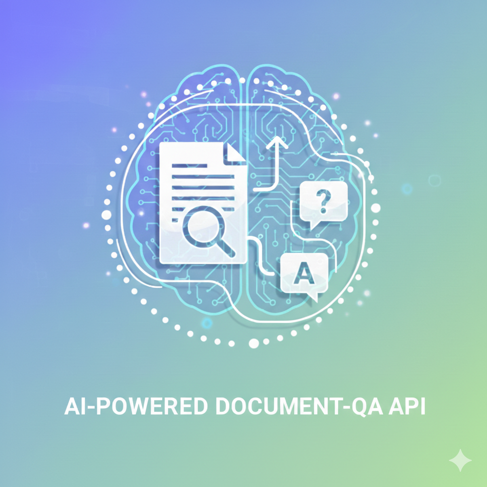
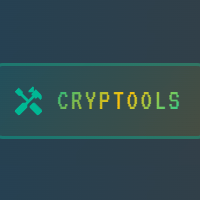
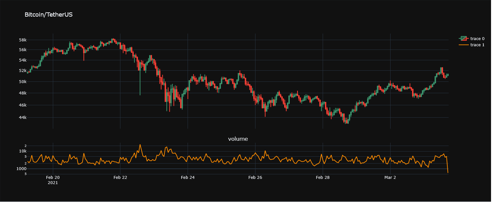
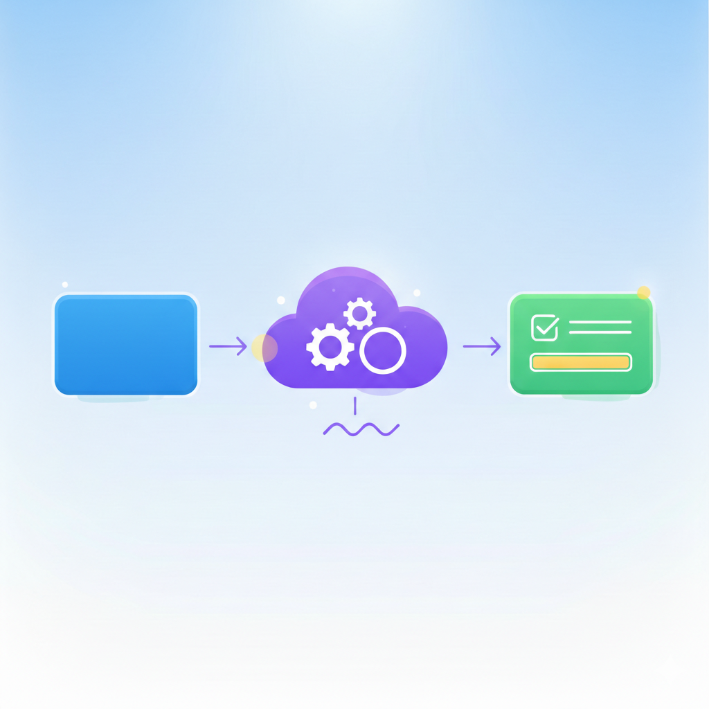
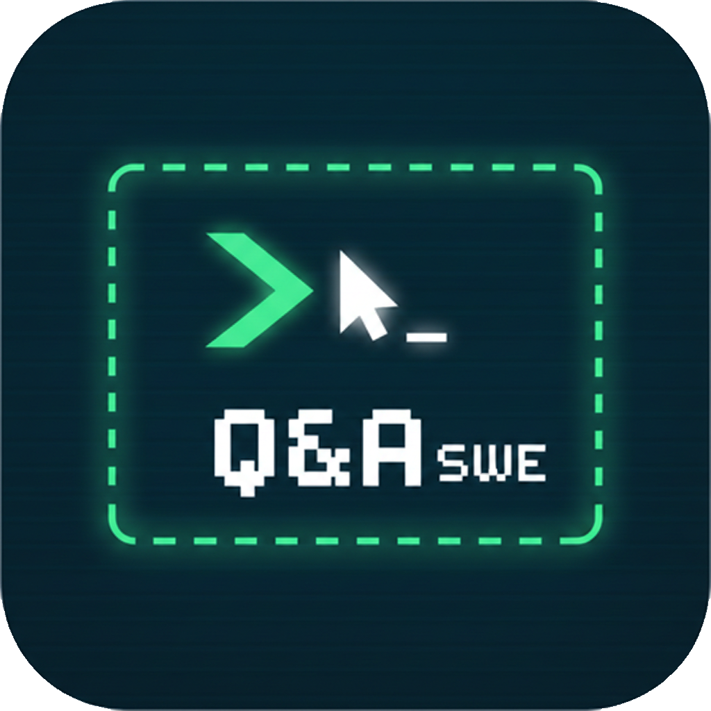

Nicolás Japas
I build scalable, cloud-native backend systems and backend-heavy full-stack applications, with end-to-end ownership from design to production. Specialized in Python, AWS serverless architectures, and data-intensive features used in production environments across Europe.
What I do
- Design and build production backend systems using Python, AWS (serverless, AWS Lambda, API Gateway, DynamoDB, and IaC)
- Develop backend-heavy full-stack applications with TypeScript and React when required
- Design systems with observability, monitoring, and operational reliability as first-class concerns
- Algorithmic and data-driven software (analysis, trading, tooling)
Selected projects
A selection of projects that reflect my focus on cloud-native systems, data-driven software, and production-grade engineering.
Menger World
Browser-based fractal experience where a voice-driven AI agent reshapes a real-time 3D scene as you talk to it.
Problem: Generative visuals are typically static or manually controlled.
Solution: Built an infinite Menger sponge corridor rendered with WebGL and GLSL raymarching, wired to a conversational AI agent that adjusts shader parameters live based on conversation mood.
Focus: Two interchangeable agent backends (ElevenLabs Conversational AI and LangGraph with Groq-hosted Llama 3), structured Pydantic outputs, and procedural ambient audio synchronized to camera depth.
WebGL · GLSL · Python · FastAPI · WebSockets · LangGraph · ElevenLabs · Groq · Pydantic · Docker

AI Document Q&A API
AI-powered backend API for semantic document ingestion and question answering over private datasets.
Problem: Extracting reliable answers from large, unstructured document collections required
more than keyword search.
Solution: RAG API with multi-provider LLMs (Gemini, DeepSeek, self-hosted Qwen 3 via Modal), JWT auth with per-user document isolation, and runtime model switching.
Focus: AI integration, data pipelines, API design, and system reliability.
Python · FastAPI · LLMs · Vector search · Embeddings · FAISS · MongoDB Atlas · RAG

Cryptools
Data-driven Web3 platform for blockchain analysis and wallet interaction.
Problem: On-chain data inspection required multiple fragmented tools.
Solution: Built a unified backend-driven system with real-time insights and a modern UI.
Focus: API design, data aggregation, and system reliability.
Python · TypeScript · Web3 · React · AWS

Algorithmic Trading System
End-to-end research and execution pipeline for systematic trading strategies.
Problem: Strategy evaluation was manual and hard to generalize.
Solution: Built a reusable backtesting and analysis framework in Python using SARIMAX modeling on real-time cryptocurrency data.
Python · Pandas · NumPy · AWS · Time Series Forecasting

EduBridge LTI
LTI 1.3 Tool Provider with Auto-Grading.
Problem: LMS platforms like Moodle support external tools, but integrating securely with LTI 1.3 and synchronizing grades via AGS is complex and poorly documented.
Solution: Built a FastAPI-based LTI 1.3 Tool Provider implementing OIDC login, JWT validation, launch claim persistence, OAuth 2.0 (private_key_jwt), and Assignment & Grade Services (AGS) to auto-grade essay submissions and sync scores directly to the Moodle gradebook.
Python · FastAPI · LTI 1.3 · OAuth 2.0 · JWT · Moodle · PostgreSQL

Interview Trainer
Terminal-style interview preparation app with 500+ software engineering questions and AI-powered explanations.
Problem: Interview prep tools lack engagement and instant, contextual explanations.
Solution: Built a retro terminal UI with xterm.js, backed by Cloudflare's edge network and Google Gemini for on-demand AI explanations.
React · xterm.js · Cloudflare Pages · D1 · Google Gemini · Vite
Certifications
AWS Solutions Architect Associate (SAA-C03), 2026
HashiCorp Terraform Associate 004 — in progress
Experience
Freelance — Software Engineer
- Building production-grade backend APIs and serverless services in Python and AWS.
- Built a self-hosted LLM inference stack on serverless GPU infrastructure (Modal, vLLM, Qwen3) with an OpenAI-compatible API endpoint for privacy-sensitive workloads.
- Building RAG pipelines, multi-provider LLM routing, and AI-powered tools using FastAPI, LangChain, and Pydantic.
- Developing Japas Audio, a commercial audio plugin business (C++, JUCE).
- Obtained AWS Certified Solutions Architect Associate (Apr 2026).
Brother ISM GmbH — Full-Stack Engineer, Backend & Cloud
- Developed core backend services for Myze, a B2B SaaS platform for industrial print-on-demand operations, serving ~30 client companies across Europe.
- Architected cross-company order routing system enabling cross-organizational fulfillment.
- Built event-driven serverless infrastructure (Lambda, EventBridge, API Gateway, DynamoDB) supporting ~100–200 orders/day.
- Designed multi-tenant REST APIs (OpenAPI) with JWT/OAuth2 and Cognito-based authentication; defined IAM roles and least-privilege policies.
- Integrated Shopify GraphQL API, ShipStation, and SendCloud for e-commerce and international shipping workflows.
DataZoo GmbH — Software Engineer
- Productionized ML forecasting models via SageMaker-backed APIs for industrial time-series applications.
- Built backend services handling large-scale industrial datasets with DuckDB and Datashader for efficient processing and visualization.
- Developed JupyterLab components for iterative visual exploration of time-series data using Plotly.
My edge
My path to software engineering wasn't typical. I spent a decade as a mechanical engineer designing automated production machinery — which gives me direct fluency in the industrial problems many of my platforms are built to solve. A background in mathematics (national olympiad finalist, three consecutive years) drives my work on data-intensive systems and algorithmic challenges. Building commercial audio plugins in C++ taught me to care deeply about performance at the lowest level. Years of university teaching sharpened my ability to communicate technical concepts clearly.
Education
Data Analytics — Ironhack
M.A. Musical Arts — Universidad Nacional de las Artes (UNA)
Mathematics — Universidad de Buenos Aires (UBA)
Electronics Technology — ITSB
Honors & Awards
- National Finalist — Argentine Mathematical Olympiad (OMA)
- Hackshow Winner — Ironhack Berlin
- First Prize — National String Orchestra Composition Competition
Languages
Spanish: Native · English: C2 · German: B2 (TELC Certificate) · Portuguese: A2
Tech stack
Backend: Python, OpenAPI, FastAPI, Node.js
Cloud: AWS (Lambda, API Gateway, DynamoDB, S3, CloudWatch, CDK, IaC)
Data: PostgreSQL, MySQL, DynamoDB, MongoDB, Pandas, NumPy, DuckDB
Frontend: TypeScript, React, Vite, MUI
Audio/DSP: C++, JUCE
Testing: Pytest, Playwright, Cypress, Jest
Other: CI/CD, AppVeyor, Sentry